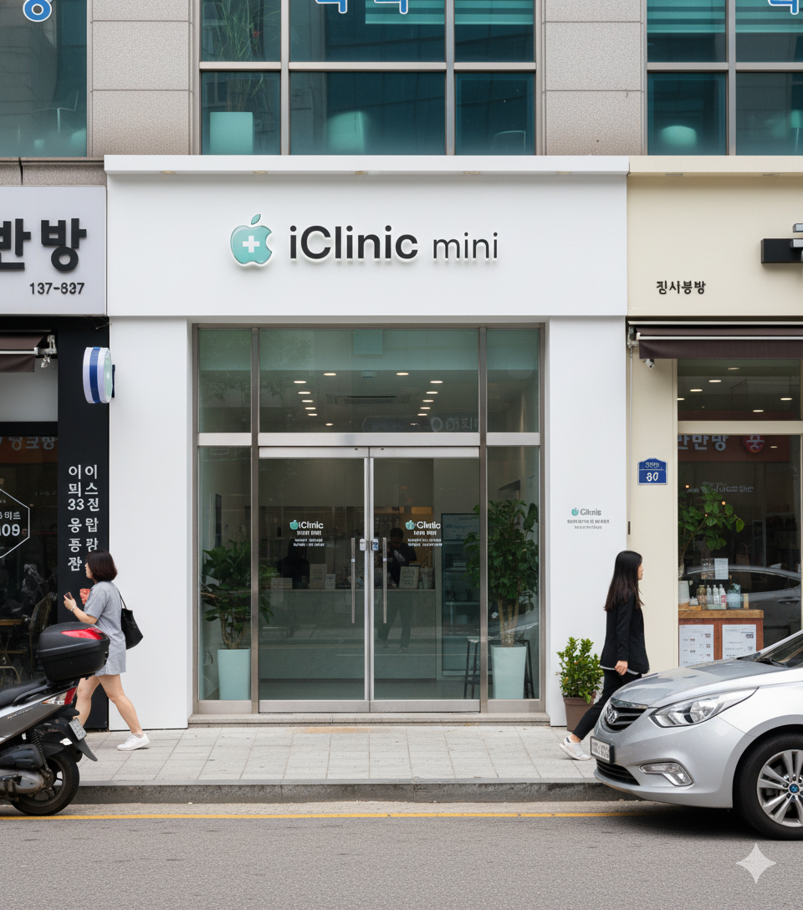

Brand Story
병원이다.
단순한 수리 센터를 넘어, 당신의 애플 제품을 위한 주치의가 되기까지.

시작은 미약하나.
2011년, iDoctor에 의해 설립된 작은 수리점 iClinic Mini.
이제 서울 전역에 걸쳐 15개의 지점을 운영하며,
매년 수천 대의 Apple 기기를 치료하는 절대 1위 서비스센터로 성장.
자나깨나 짭 조심.
가파른 성장엔 가짜가 판치기 마련.
항상 인증 스티커를 확인하세요.
Repaired by iClinic in Seoul
전문화의 대명사.
카메라를 위한 Ophthalmology.
배터리의 Cardiology.
디스플레이의 Plastic Surgery.
데이터 복구의 Neurology.
각 분야의 전문가가 정밀한 작업을 수행해 기기의 수명을 한층 더 연장합니다.
이제는 세계로.
서울을 넘어, 글로벌 시장으로.
따뜻한 봄날 상해에서 만나요.
26년 2월 중 iClinic 상해 오픈 예정